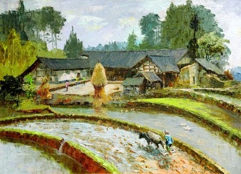

小报栏
2012-10-28
校庆前一天的中午，从南区小绿园走过去，看见七八个同学在清理宣传栏上的牛皮癣广告。他们都穿着蓝色的校庆志愿者制服，挤在那样一小块宣传栏前面，就像搞大扫除的小学生。这块宣传栏是党校的宣传栏，我既不是党员，清理与否也就与我无关了。我倒很希望能派几个志愿者去清理六食广场的报栏。
论起学校里的报栏，关注度最高的当属图书馆西边矮墙那一处。那儿总少不了三五个关注时事的男女老少。到了晚上，有些人会一直待到报栏熄灯，才肯作罢离开。思源楼西边也有一列宣传栏，因为在老年活动中心旁边，展览的多是退休教师的照片、画作，或者红白喜事的通知。
这两处报刊栏很干净，很少见到小广告。六食广场的报栏就没这么幸运了，谁叫它们占着食堂门口的黄金地段呢。贴广告的时间可没准儿，有的大清早就过来了，有的趁饭点人最多的时候才赶过来，还有人天黑了再来，弄得跟真的做了亏心事一样。贴广告的人手也不一定。干练的左手拿广告，右手拿浆糊，一个人，顶多再贴一个搭手，就能搞定了。有些很体面的广告，除了挂上去，还得拍照留念，这才需要额外的人手。学生会的广告就属于很体面的那一类，他们也不缺人手，人多去几个，不就刚好体面几分么。
负责六食广场小报栏的小哥肯定很辛苦。辛苦倒也罢了，那几个报栏也没多少读者，真难为他费心了。有那么几次遇见他换报纸，都是天黑之后。他从五食堂那边骑车过来，换完报纸，再骑车原路返回。一般来说，只有两类人会去撕报栏上的旧广告，一类是贴新广告的，另一类 —— 或说另一位 —— 就是这位报栏小哥了。报栏上原本照例有“禁止张贴广告”之类的标语，可惜不仅字小，还很模糊。后来，报栏小哥贴上了新的“禁止张贴广告”标语，虽然醒目，可贴广告的哪会讲究这个呢。再后来，报栏小哥在报栏的玻璃上贴满了一层透明胶带：虽然不能阻止别人贴广告，但方便了他自己撕广告。这一招很聪明。
当然，六食广场的报栏早在暑假就被学校拆掉了，取而代之的是几块崭新的蓝底塑料板，专门用来贴广告的。撕旧广告的人只剩下一类人了，他们，可不要寂寞呀。
注：配图选自六食广场报栏刊出的一期《光明日报》，画家是彭一虹，画的是乌江景色，但和我家乡的民居如出一辙。在一个春寒料峭的早上看见这幅画，很感动。
comments powered by Disqus